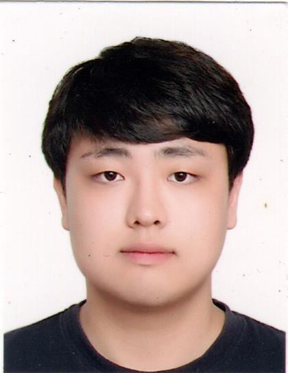
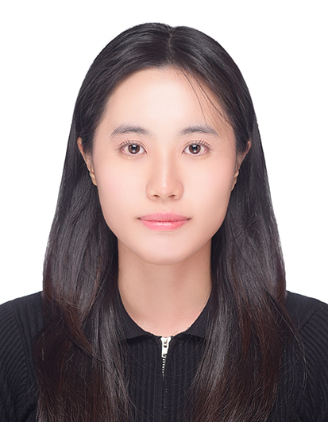

PRINCIPAL INVESTIGATOR
JI EUN OH, M.D., Ph.D.
Assistant Professor · Graduate School of Medical Science & Engineering, KAIST
Immunology · Dermatology · B cell biology · Barrier immunity
PEOPLE
A collaborative group studying B cell biology, tissue immunity and host defense at KAIST.
PRINCIPAL INVESTIGATOR
Assistant Professor · Graduate School of Medical Science & Engineering, KAIST
Immunology · Dermatology · B cell biology · Barrier immunity
PH.D. STUDENT
POSTDOCTORAL RESEARCHER
PH.D. STUDENT

PH.D. STUDENT
RESEARCH ASSOCIATE

PH.D. STUDENT
PH.D. STUDENT

PH.D. STUDENT
PH.D. STUDENT
PH.D. STUDENT
LAB MANAGER
Choong Man Lee, M.D., Ph.D.
Jaehyuk Kwon, M.D., Ph.D.
Eunjin Lee, Ph.D.